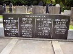
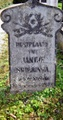
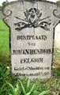
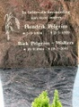
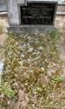
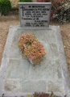
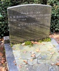
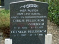
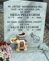

Diverse familiegraven Geerts, Pelgrim, Vroom, Triemstra, stam-B

Jantje Swierenga, *25-09-1847, +09-06-1931 stam-B

Johan Hendrik Pelgrim, *13-08-1844, +03-07-1912 stam-B

Hendrik Pelgrim, *05-03-1904, +02-05-1959 en Riek Pelgrim-Wolters, *19-09-1904, +19-07-2005, stam G

Wilhelmus Antonius Pelgrim, *07-05-1913, +30-12-1968 echtgenoot van Henrica A. Wenting, stam-G

Johannes Albertus Pelgrim, *29-10-1905, +22-08-1964, en Theodora J.M. Kaalberg, *03-07-1909, +05-01-1991, stam-G

N.W. Boekensteijn-Pelgrim, *23-05-1918, +21-01-1989, W.G. Boekensteijn, *15-04-1914, +09-03-1995

Dirkje Pellegrom-Verboom, *11-09-1902, +06-09-1976 en Cornelis Pellegrom, *01-05-1907, +21-11-1987

Nesia Pellegrom, *05-09-1958, +26-11-1988 en Akco Pellegrom, *28-02-1969, +10-06-1996